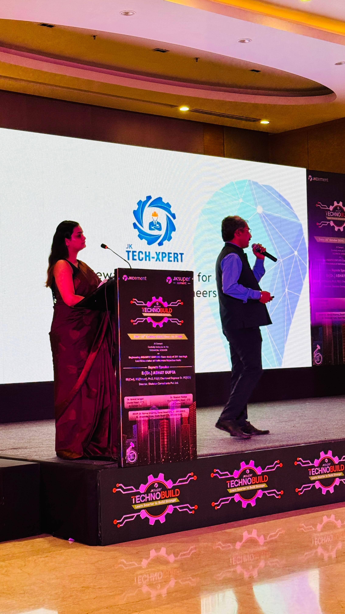
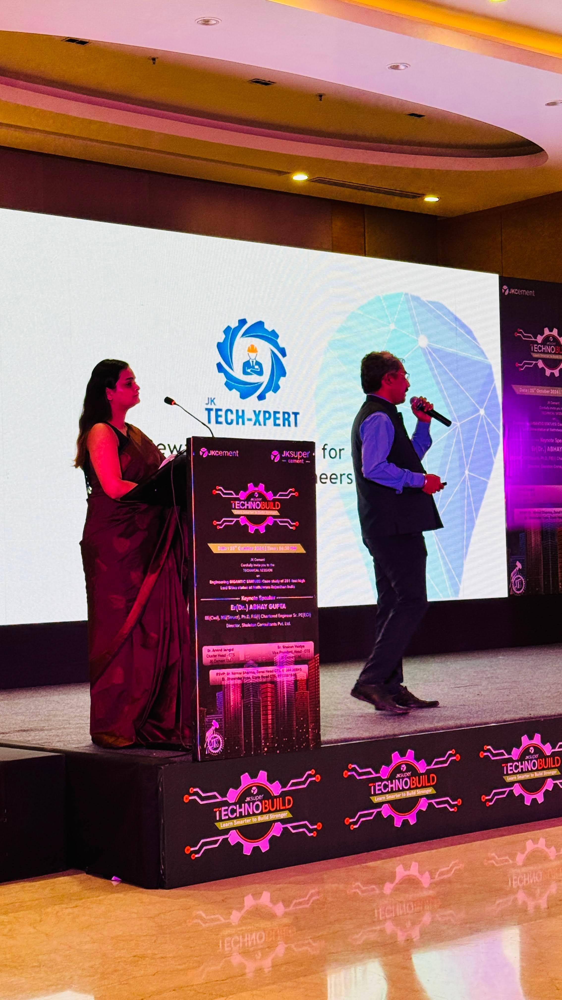

Engaging, Enthralling, and Everlasting Memories
Book Now
Taniya Naithani is more than just an anchor—she is the voice of celebration, the orchestrator of moments, and the maestro behind memorable events. With a dynamic presence and unmatched eloquence, she has carved her own space in the world of event hosting, connecting effortlessly with audiences of every size and stature. From hosting intimate private gatherings to grand corporate functions, her ability to engage, entertain, and elevate every event is unparalleled.
With over a decade of experience as a professional emcee, Taniya brings a perfect blend of spontaneity, professionalism, and magnetic charm to the stage. Her journey began with a simple love for storytelling and public speaking, which evolved into a full-time passion. Today, she is celebrated for her ability to command attention while making every guest feel seen and valued.
Throughout her career, Taniya has hosted product launches, destination weddings, celebrity nights, fashion shows, music festivals, awards ceremonies, and more. Her clients include top-tier brands, celebrities, and elite families from around the globe. Regardless of the crowd, Taniya ensures each event is tailored, personal, and filled with joy.
Her style is unique—elegant yet exuberant, refined yet relatable. She transitions seamlessly between formal ceremonies and high-energy performances, adapting her tone and presence to suit the theme and audience. Whether it’s making the bride and groom feel like royalty or keeping a crowd of 5,000 cheering in unison, Taniya’s versatility is her signature strength.
Beyond the microphone, Taniya is deeply committed to creating inclusive experiences. She believes in the magic of authentic moments and uses her voice not just to entertain, but to inspire. Her emotional intelligence and active listening make her a beloved figure—not just for what she says, but for how she makes people feel.
Taniya’s professional approach ensures that every detail is executed flawlessly. She collaborates closely with clients, event planners, and production teams to align with the event’s vision, script, and flow. Her meticulous preparation and graceful improvisation make her a reliable choice for both spontaneous and structured occasions.
In addition to live events, she has also built a strong digital presence. Her social media channels are a reflection of her vibrant personality, showcasing behind-the-scenes moments, client testimonials, and creative snippets from her performances. She engages with followers in meaningful ways, offering insights into her life as an emcee and empowering aspiring hosts.
Taniya is a strong advocate for women in media and public speaking. She mentors young professionals, sharing her journey, challenges, and learnings to help others build their confidence and find their voice. She believes that the microphone is not just a tool, but a symbol of power and responsibility.
Her journey is one of growth, grace, and grit. Every stage she steps on becomes a canvas where stories unfold, laughter echoes, and memories are made. From the moment she walks on stage to the final goodbye, Taniya ensures every second is brimming with life.
With her signature blend of charisma and class, Anchor Taniya Naithani continues to be the preferred host for those who want their events to be extraordinary. When you book Taniya, you're not just getting an anchor—you’re welcoming a partner who will celebrate your story like her own.


 



Get in touch to make your event unforgettable!